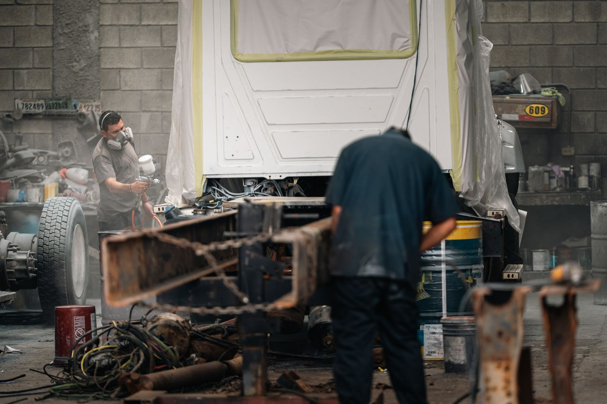
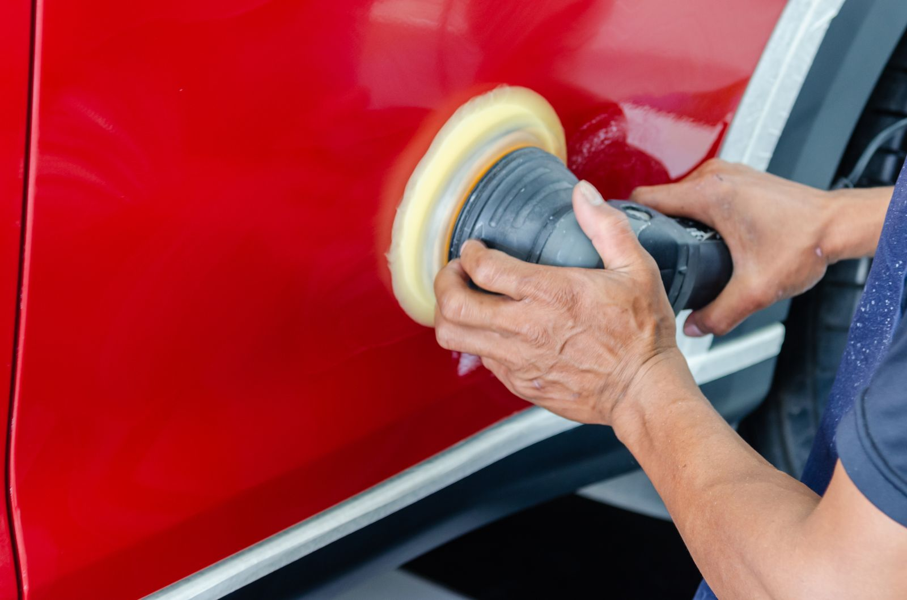
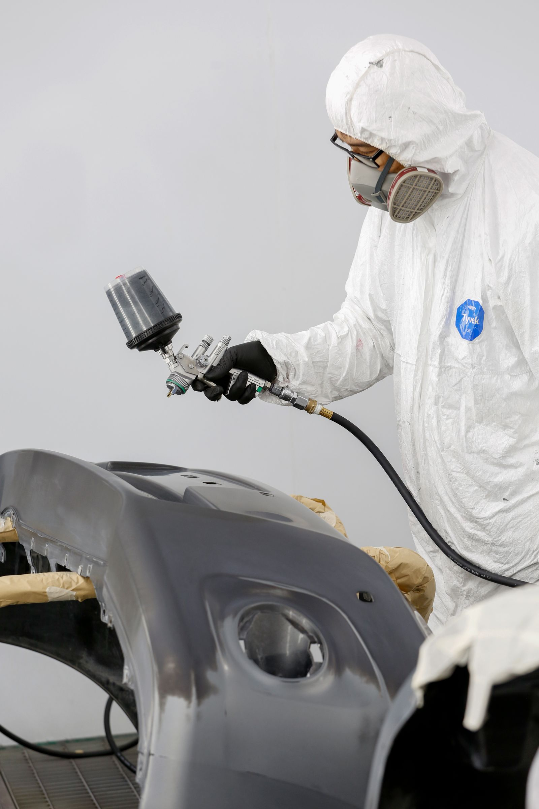

Chapa
Reparación de carrocería, con atención a la forma y a la superficie del vehículo.
EL BOSQUE, CÁDIZ
Un taller local dedicado a la carrocería y la pintura de vehículos.
Ver ubicación (Google Maps, nueva pestaña)
A QUÉ NOS DEDICAMOS
Trabajo sobre la carrocería y su acabado.
Las dos actividades de Taller Chic@.

Reparación de carrocería, con atención a la forma y a la superficie del vehículo.

Trabajos de pintura de vehículos, cuidando el color y los detalles del acabado.
Fotografías ilustrativas del sector. No muestran trabajos ni instalaciones de Taller Chic@.
EL TALLER
Taller Chic@ es un taller de chapa y pintura en El Bosque, Cádiz. Nuestra actividad se centra en la carrocería de los vehículos y los trabajos de pintura.
Si quieres acercarte, consulta la ubicación del negocio en Google Maps antes de venir.
Dónde estamosDÓNDE ESTAMOS
Taller Chic@
11670 El Bosque, Cádiz
Abre la búsqueda del taller en Google Maps y comprueba la ubicación antes de desplazarte.
Abrir Google Maps (nueva pestaña)